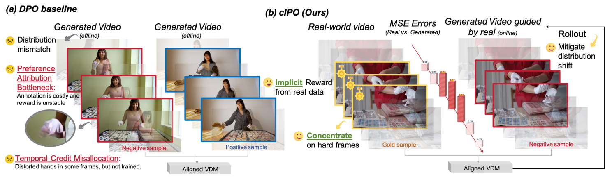
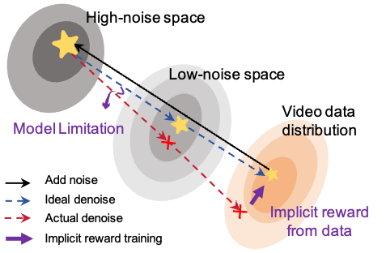
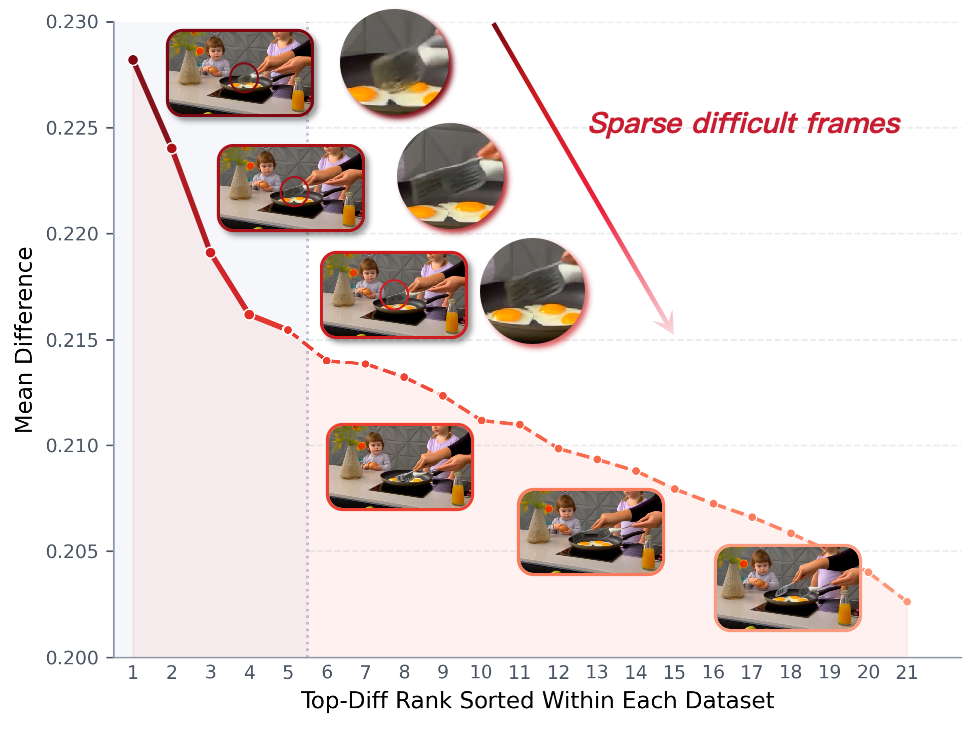
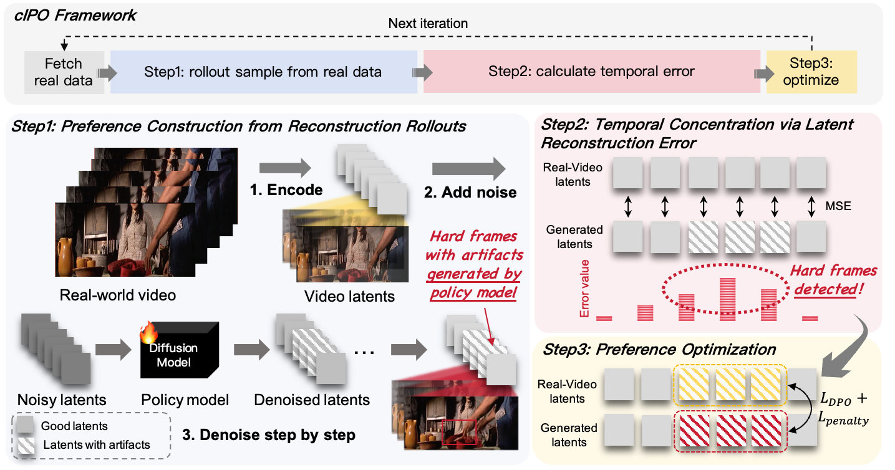
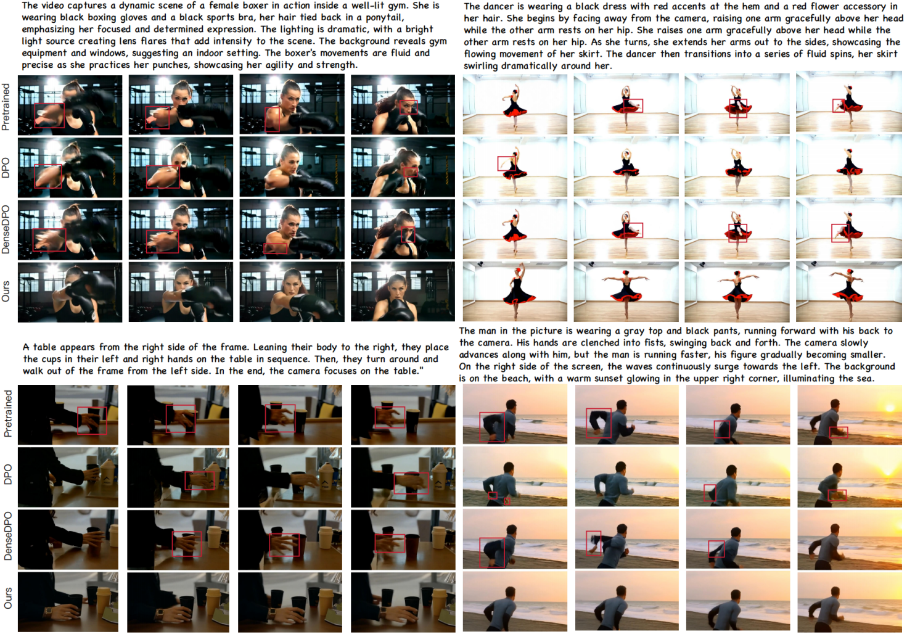
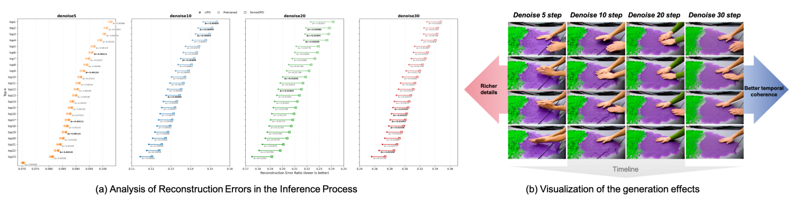

01
Reconstruct
Encode a real video, add noise at a selected diffusion step, then denoise with the current policy. The clean latent is preferred; the reconstruction is dispreferred.
Implicit Preference Optimization for Text-to-Video Generation
1Tsinghua University 2Kling Team, Kuaishou Technology 3Sun Yat-sen University
DPO improves visual quality but struggles with authenticity and sparse temporal artifacts.
Existing methods face two key limitations: preference attribution relies on costly offline annotations or unstable online rewards, while uniform temporal supervision cannot precisely target brief failures such as motion collapse, object flickering, and color oversaturation.

Offline human preferences are costly and detached from the current policy, while online reward models are unstable and biased. A useful preference signal should directly capture the model’s own rollout errors.

Video artifacts often occur in only a few difficult frames. Uniform supervision spreads the learning signal across the full sequence instead of focusing optimization where failures actually emerge.

cIPO turns the denoising trajectory into its own supervision. Reconstruction reveals model-specific errors; temporal concentration assigns credit where those errors actually happen.

Encode a real video, add noise at a selected diffusion step, then denoise with the current policy. The clean latent is preferred; the reconstruction is dispreferred.
Measure frame-wise latent MSE. High-error frames expose temporally localized artifacts such as flickering, collapse, and abrupt discontinuity.
Apply pairwise preference learning on the selected hard segments while a likelihood-preserving penalty stabilizes the preferred sample.
On MotionBench, cIPO achieves the strongest frame authenticity and overall temporal quality across offline, online, ground-truth-assisted, and recent preference optimization baselines.
| Method | Frame Authenticity | Temporal Quality · VBench | |||||
|---|---|---|---|---|---|---|---|
| Forensic ↑ | Om-D ↑ | Background ↑ | Motion ↑ | Subject ↑ | Temporal ↑ | Overall ↑ | |
| Pretrained | 0.804 | 0.479 | 0.937 | 0.974 | 0.929 | 0.960 | 0.161 |
| DPO (Off) | 0.810 | 0.474 | 0.938 | 0.975 | 0.927 | 0.960 | 0.161 |
| DPO (Off, GT) | 0.815 | 0.478 | 0.939 | 0.972 | 0.919 | 0.957 | 0.162 |
| DPO (On, GT) | 0.830 | 0.486 | 0.931 | 0.973 | 0.919 | 0.958 | 0.162 |
| Flow-DPO | 0.811 | 0.482 | 0.939 | 0.976 | 0.926 | 0.959 | 0.162 |
| DF-DPO | 0.832 | 0.509 | 0.935 | 0.978 | 0.926 | 0.958 | 0.160 |
| DenseDPO | 0.819 | 0.475 | 0.937 | 0.975 | 0.930 | 0.963 | 0.162 |
| RealDPO | 0.851 | 0.512 | 0.942 | 0.976 | 0.931 | 0.962 | 0.165 |
| OnlineVPO | 0.821 | 0.490 | 0.941 | 0.980 | 0.928 | 0.956 | 0.163 |
| LocalDPO | 0.818 | 0.494 | 0.938 | 0.982 | 0.933 | 0.959 | 0.164 |
| Ours | 0.876 | 0.524 | 0.947 | 0.989 | 0.937 | 0.961 | 0.168 |

Too little noise produces easy negatives;
too much disrupts semantic consistency.
Moderate rollout perturbation exposes failure modes while preserving meaningful structure, which is a authenticity–motion trade-off.

If you find useful in your research, please cite the paper.
@misc{liu2026cipo,
title = {Temporal Concentration from Rollout Errors:
Implicit Preference Optimization for Text-to-Video Generation},
author = {Liu, Henglin and Kong, Fangyuan and Wang, Jing and Lin, Yizhou
and Huang, Nisha and Liu, Chang and Wang, Xintao and Wan, Pengfei
and Gai, Kun and Li, Xiu},
year = {2026}
}